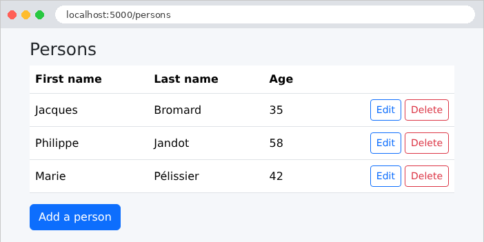
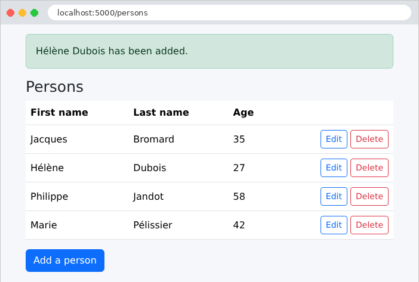
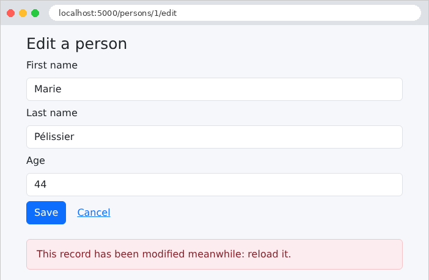

9. Arquitectura en capas y acceso a datos
Los ejemplos anteriores conservaban sus datos en memoria. Una aplicación real los almacena en una base de datos y se organiza en capas (véase el diagrama de la introducción):
- la capa web (controladores, vistas): lee la solicitud, llama a la capa de negocio y selecciona la vista;
- la capa de negocio: reglas de negocio;
- la capa DAO (*Data Access Object*): consultas a la base de datos.
Cada capa conoce únicamente la capa inferior, y lo menos posible de sus detalles: la capa web no conoce SQL y la capa de negocio no conoce HTML. Esta separación facilita comprender, probar y evolucionar cada capa. El ejemplo 28 aplica esto a la gestión de una lista de personas: es, a menor escala, la gestión de los médicos y los clientes del caso de estudio.
En [Python], el acceso a bases de datos se organiza en varias capas:
- El estándar DB-API (PEP 249) define la interfaz común de los controladores de bases de datos: abrir una conexión, ejecutar un comando SQL y leer filas. Para [MySQL] (y [MariaDB]), utilizamos [PyMySQL], un controlador escrito íntegramente en [Python], que se instala sin necesidad de compilador;
- [SQLAlchemy] es la biblioteca de acceso a datos más utilizada en [Python]. Tiene dos niveles. Su núcleo (*Core*) administra las conexiones (incluido un grupo de conexiones, que mantiene abiertas unas cuantas conexiones y las presta a las consultas, ya que abrir una conexión es costoso) y construye instrucciones SQL a partir de [Python] expresiones, independientemente del SGBD. Su ORM (*Object-Relational Mapper*) asigna [Python] clases (las entidades) a tablas de la base de datos y transforma las filas leídas en objetos.
Esto equivale a [JDBC], [JPA] y [Hibernate] en [Java], o a [Entity Framework Core] en [C#]. La extensión [Flask-SQLAlchemy] simplifica ligeramente la configuración de [SQLAlchemy] en una aplicación [Flask]; nosotros utilizamos [SQLAlchemy] directamente, lo que muestra lo que ocurre y mantiene las capas de negocio y DAO independientes de [Flask].
El ejemplo requiere un servidor [MySQL] (o [MariaDB]) en funcionamiento: el apéndice explica cómo instalar uno con [Laragon].
9.1. Ejemplo 28: un sistema de gestión de personal en tres capas
| 28-layers/
├── app.py
├── business/
│ ├── data.py
│ ├── exception.py
│ └── persons_business.py
├── config.py
├── controllers/
│ └── persons.py
├── dao/
│ └── persons_dao.py
├── database/
│ └── dbpersons.sql
├── entities/
│ └── person.py
├── models/
│ └── person_form.py
├── static/
│ ├── css/
│ │ └── styles.css
│ └── js/
│ └── app.js
└── templates/
├── fragments/
│ ├── confirmation.html
│ └── field.html
├── layout.html
└── persons/
├── form.html
└── list.html
|
9.1.1. La base de datos
La base de datos [dbpersons] se crea mediante el script SQL. Con [Laragon], puede ejecutarlo, por ejemplo, en la herramienta [HeidiSQL] (menú Archivo / Ejecutar archivo SQL), o desde la línea de comandos, en la carpeta del ejemplo:
| mysql -u root < database/dbpersons.sql
|
El archivo [database/dbpersons.sql]:
| -- base de datos del ejemplo 28: una sola tabla, [persons]
-- el script está escrito en UTF-8
SET NAMES utf8mb4;
DROP DATABASE IF EXISTS dbpersons;
CREATE DATABASE dbpersons CHARACTER SET utf8mb4 COLLATE utf8mb4_unicode_ci;
USE dbpersons;
CREATE TABLE persons (
id INT NOT NULL AUTO_INCREMENT,
-- la versión de la fila, incrementada por SQLAlchemy en cada modificación
version INT NOT NULL DEFAULT 0,
first_name VARCHAR(30) NOT NULL,
last_name VARCHAR(30) NOT NULL,
age INT NOT NULL,
PRIMARY KEY (id),
-- dos personas no pueden tener el mismo nombre y apellido
CONSTRAINT unq_persons_first_name_last_name UNIQUE (first_name, last_name)
) ENGINE = InnoDB;
INSERT INTO persons (first_name, last_name, age) VALUES
('Marie', 'Pélissier', 42),
('Jacques', 'Bromard', 35),
('Philippe', 'Jandot', 58);
|
- Línea 3: el script está escrito en [UTF-8]; esto se indica al servidor para que los acentos de los datos ([Pélissier]) permanezcan intactos;
- línea 5: el conjunto de caracteres [utf8mb4] acepta todos los caracteres (acentos, emojis, etc.). La intercalación [utf8mb4_unicode_ci] compara las cadenas sin distinguir entre mayúsculas y minúsculas ni acentos: para [MySQL], [pelissier] y [Pélissier] son iguales;
- línea 11: un número de versión, que se incrementa cada vez que se modifica la fila (véase «bloqueo optimista», más adelante);
- línea 17: una restricción de unicidad con nombre: la base de datos no admite dos personas con el mismo nombre y apellido. El nombre servirá para identificar el error.
9.1.2. La configuración
| # config.py: la configuración de la aplicación (vea el ejemplo 25)
# la clave secreta: firma la sesión (mensajes flash) y los tokens anti-CSRF
SECRET_KEY = "a-secret-key-for-example-28"
# los mensajes de error de WTForms los traduce el propio WTForms (vea el ejemplo 19)
WTF_I18N_ENABLED = False
# la conexión a la base de datos: una URL de SQLAlchemy.
# mysql+pymysql: el SGBD MySQL, mediante el controlador PyMySQL
# root: : el usuario root, sin contraseña (los de Laragon);
# con contraseña: root:myPassword@...
# localhost:3306/dbpersons: el servidor, su puerto, la base de datos
# charset=utf8mb4: los intercambios con la base de datos se hacen en UTF-8
DATABASE_URL = "mysql+pymysql://root:@localhost:3306/dbpersons?charset=utf8mb4"
# True: las sentencias SQL enviadas a la base de datos se muestran en la consola
SQL_ECHO = False
|
- Línea 15: [SQLAlchemy] hace referencia a una base de datos identificada por una URL. [mysql+pymysql]: el dialecto SQL ([MySQL]) y el controlador ([PyMySQL]); luego el usuario y su contraseña (aquí, [root]; sin contraseña, la configuración de [Laragon]), el servidor, su puerto y la base de datos; por último, los parámetros: [charset=utf8mb4] habilita la comunicación entre el controlador y el servidor en [UTF-8]. Si su servidor tiene contraseña, modifique esta línea o defina la variable de entorno [FLASK_DATABASE_URL] (ejemplo 25);
- Línea 18: con [True], [SQLAlchemy] muestra en la consola cada comando SQL enviado a la base de datos. Es muy instructivo y lo usaremos más adelante.
| # app.py: la aplicación del ejemplo 28; el ensamblaje de las tres capas
from pathlib import Path
from flask import Blueprint, Flask
from flask_wtf.csrf import CSRFProtect
from sqlalchemy import create_engine
from sqlalchemy.orm import sessionmaker
from controllers.persons import persons
from dao.persons_dao import PersonsDao
from business.persons_business import PersonsBusiness
BOOTSTRAP = Path(__file__).resolve().parent.parent / "common" / "bootstrap"
def create_app():
app = Flask(__name__)
app.jinja_env.trim_blocks = True
app.jinja_env.lstrip_blocks = True
app.config.from_pyfile("config.py")
app.config.from_prefixed_env()
# el acceso a la base de datos: el "engine" de SQLAlchemy administra un POOL de conexiones
# (conexiones abiertas una vez y luego reutilizadas de una solicitud a otra).
# pool_pre_ping: una conexión se prueba antes de reutilizarse
engine = create_engine(app.config["DATABASE_URL"], echo=app.config["SQL_ECHO"],
pool_pre_ping=True)
# la fábrica de sesiones; expire_on_commit=False: los objetos leídos siguen
# siendo utilizables después del fin de la transacción (por la vista, en particular)
sessions = sessionmaker(engine, expire_on_commit=False)
# el ensamblaje de las capas: DAO -> negocio; la capa web solo conoce la capa de negocio
app.extensions["business"] = PersonsBusiness(sessions, PersonsDao())
app.register_blueprint(Blueprint("bootstrap", __name__, static_folder=BOOTSTRAP,
static_url_path="/bootstrap"))
app.register_blueprint(persons)
CSRFProtect(app)
return app
if __name__ == "__main__":
create_app().run(port=5000, debug=True)
|
- Líneas 26–27: el *engine* de [SQLAlchemy] es el objeto que administra las conexiones a una base de datos y el grupo de conexiones. Se crea una sola vez, al iniciar; la primera conexión se abre únicamente con la primera solicitud. [pool_pre_ping=True] comprueba una conexión del grupo antes de reutilizarla: un servidor [MySQL] cierra las conexiones que han estado inactivas demasiado tiempo y, de lo contrario, la aplicación recibiría un error;
- Línea 30: una sesión ORM es el objeto que sirve para leer y escribir entidades; toma prestada una conexión del grupo y hace un seguimiento de las entidades leídas para detectar cambios en ellas. [sessionmaker] crea una fábrica de sesiones, cada una de cuyas llamadas producirá una sesión. De forma predeterminada, al final de una transacción, la sesión «expira» las entidades (olvida sus valores para volver a leerlos la próxima vez que se usen). [expire_on_commit=False] lo evita: las entidades devueltas por la capa de negocio siguen siendo utilizables después de la transacción, por la vista que las muestra;
- línea 33: ensamblaje de las capas: la capa de negocio recibe la fábrica de sesiones y la capa DAO. La capa web conocerá únicamente la capa de negocio;
- línea 38: protección anti-CSRF para toda la aplicación (ejemplo 21).
9.1.3. La entidad Person
| # entities/person.py: una fila de la tabla [persons]
from sqlalchemy import String
from sqlalchemy.orm import DeclarativeBase, Mapped, mapped_column
# la clase padre de todas las entidades: SQLAlchemy registra en ella el
# mapeo clase <-> tabla de cada una de sus clases hijas
class Base(DeclarativeBase):
pass
class Person(Base):
# el nombre de la tabla
__tablename__ = "persons"
# la clave primaria, generada por la base de datos (AUTO_INCREMENT); SQLAlchemy vuelve a leer
# su valor después de cada INSERT. Mapped[int]: el tipo Python de la columna
id: Mapped[int] = mapped_column(primary_key=True)
# el bloqueo optimista: vea __mapper_args__ más abajo
version: Mapped[int] = mapped_column()
first_name: Mapped[str] = mapped_column(String(30))
last_name: Mapped[str] = mapped_column(String(30))
age: Mapped[int]
# version_id_col: SQLAlchemy incrementa la versión en cada UPDATE, y agrega
# la condición "AND version = <valor leído>"
__mapper_args__ = {"version_id_col": version}
def __init__(self, first_name: str, last_name: str, age: int):
self.first_name = first_name
self.last_name = last_name
self.age = age
|
- líneas 8–9: todas las entidades de una aplicación heredan de la misma clase base, derivada de [DeclarativeBase]. [SQLAlchemy] almacena en esta clase la descripción de cada entidad (su tabla, sus columnas): es el modelo declarativo;
- línea 14: la tabla asociada a la clase;
- línea 18: una columna se declara mediante un atributo anotado con [Mapped[type]]: el tipo de la columna, en [Python]. [mapped_column] especifica sus características: en este caso, la clave primaria. De forma predeterminada, la base de datos genera una clave primaria entera ([AUTO_INCREMENT]): [SQLAlchemy] vuelve a leer su valor después de cada [INSERT];
- Líneas 21–23: [String(30)] especifica la longitud de la columna (útil si [SQLAlchemy] tuviera que crear la tabla por sí mismo). Una columna sin características especiales puede usar simplemente la anotación ([age]). El tipo [Mapped[str]] hace que la columna sea obligatoria ([NOT NULL]); [Mapped[str | None]] la haría opcional;
- línea 27: [version_id_col] designa la columna de versión: [SQLAlchemy] la incrementa con cada [UPDATE] y le añade la condición [AND version = <value read>]. Si otra consulta ha modificado la fila entretanto, su versión habrá cambiado; [UPDATE] no modifica ninguna fila y [SQLAlchemy] lanza una excepción [StaleDataError]. Se trata de un bloqueo optimista: no se bloquea nada, pero se detectan las modificaciones concurrentes;
- líneas 29–32: un constructor para crear una persona en una sola línea.
9.1.4. La capa DAO
| # dao/persons_dao.py: la capa DAO, consultas, ninguna regla de negocio.
# Cada método recibe la SESIÓN de SQLAlchemy, abierta por la capa
# de negocio: todas las consultas de una misma operación comparten así la misma
# conexión y la misma transacción
from sqlalchemy import delete, select
from sqlalchemy.orm import Session
from entities.person import Person
class PersonsDao:
# SELECT ... FROM persons ORDER BY last_name, first_name
def list(self, session: Session) -> list[Person]:
return list(session.scalars(select(Person).order_by(Person.last_name, Person.first_name)))
# SELECT ... WHERE id = ?; None si la persona no existe
def read(self, session: Session, id: int) -> Person | None:
return session.get(Person, id)
# una persona con los mismos nombre y apellido, distinta de [except_id]:
# SELECT ... WHERE first_name = ? AND last_name = ? AND id <> ? LIMIT 1
def namesake(self, session: Session, first_name: str, last_name: str, except_id: int = 0) -> Person | None:
query = select(Person).where(Person.first_name == first_name, Person.last_name == last_name,
Person.id != except_id).limit(1)
return session.scalars(query).first()
# INSERT (persona nueva): la persona se agrega a la sesión, y
# flush envía la sentencia SQL DE INMEDIATO (y no en el COMMIT)
def add(self, session: Session, person: Person) -> Person:
session.add(person)
session.flush()
return person
# DELETE FROM persons WHERE id = ?
def delete(self, session: Session, id: int):
session.execute(delete(Person).where(Person.id == id))
|
La capa DAO contiene únicamente consultas, sin reglas de negocio. Cada método recibe la sesión abierta por la capa de negocio: todas las consultas de una misma operación de negocio comparten así la misma conexión y la misma transacción.
- Línea 15: [select(Person)] construye una consulta ([SELECT]) sobre la tabla "persons"; [order_by] la ordena. Las columnas se escriben como atributos de la clase ([Person.last_name]): el editor puede verificar sus nombres y no se escribe SQL a mano. [session.scalars(...)] ejecuta la consulta y devuelve las entidades construidas a partir de las filas leídas;
- línea 19: lectura por clave primaria, o [None];
- líneas 23–26: [where] añade condiciones, escritas con los operadores de [Python] ([==], [!=]): [SQLAlchemy] las traduce a SQL, con parámetros (los valores nunca se copian en el texto del comando SQL, lo que hace imposible la inyección SQL). [first()] devuelve la primera entidad, o [None];
- líneas 30–33: [session.add] asigna una nueva entidad a la sesión; [flush] envía de inmediato [INSERT] a la base de datos (sin [flush], se enviaría en el [COMMIT]). La base de datos genera entonces el identificador, que [SQLAlchemy] almacena en la entidad;
- línea 37: un [DELETE], construido de la misma manera.
9.1.5. La capa de negocio
| # business/data.py: los datos de una persona, tal como la capa web los transmite
from dataclasses import dataclass
@dataclass(frozen=True)
class PersonData:
first_name: str
last_name: str
age: int
|
Los datos de una persona, tal como los transmite la capa web a la capa de negocio: un objeto simple, sin relación con [Flask], [WTForms] ni [SQLAlchemy].
| # business/exception.py: una regla de negocio rechaza la operación; el mensaje
# está destinado al usuario
class BusinessException(Exception):
pass
|
Una clase de excepción específica de la capa de negocio: una regla de negocio rechaza la operación y el mensaje de la excepción está destinado al usuario.
| # business/persons_business.py: la capa de NEGOCIO, las reglas de negocio, y solo ellas.
# Cada método abre su TRANSACCIÓN: confirmada (COMMIT) al final del bloque
# with, cancelada (ROLLBACK) si sale de él una excepción
from sqlalchemy.exc import IntegrityError
from sqlalchemy.orm import sessionmaker
from sqlalchemy.orm.exc import StaleDataError
from dao.persons_dao import PersonsDao
from entities.person import Person
from business.data import PersonData
from business.exception import BusinessException
NAMESAKE = "A person already has these first and last names."
MODIFIED = "This record has been modified meanwhile: reload it."
UNKNOWN = "This person does not exist (anymore)."
class PersonsBusiness:
# sessions: la "fábrica" de sesiones de SQLAlchemy (vea app.py)
def __init__(self, sessions: sessionmaker, dao: PersonsDao):
self._sessions = sessions
self._dao = dao
def list(self) -> list[Person]:
# sessions.begin(): una sesión Y su transacción; el bloque with las cierra
with self._sessions.begin() as session:
return self._dao.list(session)
def read(self, id: int) -> Person:
with self._sessions.begin() as session:
return self._read(session, id)
def add(self, data: PersonData) -> Person:
try:
with self._sessions.begin() as session:
# regla 1: no puede haber dos personas con el mismo nombre y apellido
if self._dao.namesake(session, data.first_name, data.last_name):
raise BusinessException(NAMESAKE)
return self._dao.add(session, Person(data.first_name, data.last_name, data.age))
except IntegrityError as e:
raise self._translate(e)
def edit(self, id: int, version: int | None, data: PersonData) -> Person:
try:
with self._sessions.begin() as session:
person = self._read(session, id)
# regla 2: no modificamos un registro modificado mientras tanto por otra persona
if person.version != version:
raise BusinessException(MODIFIED)
if self._dao.namesake(session, data.first_name, data.last_name, id):
raise BusinessException(NAMESAKE)
# la entidad leída está "rastreada" por la sesión: basta con
# modificarla; flush envía el UPDATE de inmediato
person.first_name = data.first_name
person.last_name = data.last_name
person.age = data.age
session.flush()
return person
except StaleDataError:
# el UPDATE "WHERE id = ... AND version = ..." no modificó ninguna fila
raise BusinessException(MODIFIED)
except IntegrityError as e:
raise self._translate(e)
def delete(self, id: int) -> Person:
with self._sessions.begin() as session:
person = self._read(session, id)
self._dao.delete(session, id)
return person
def _read(self, session, id: int) -> Person:
person = self._dao.read(session, id)
if person is None:
raise BusinessException(UNKNOWN)
return person
# dos altas simultáneas: la restricción de unicidad de la base de datos rechazó la
# segunda; e.orig: el error original, el del controlador PyMySQL
@staticmethod
def _translate(e: IntegrityError) -> Exception:
if "unq_persons_first_name_last_name" in str(e.orig):
return BusinessException(NAMESAKE)
return e
|
- Línea 27: cada método abre su propia sesión y transacción: [sessions.begin()] devuelve una sesión con una transacción iniciada. Al final del bloque [with], la transacción se confirma ([COMMIT]) y la sesión se cierra; si se produce una excepción dentro del bloque, la transacción se revierte ([ROLLBACK]): ninguno de los cambios realizados dentro del bloque se conserva. La capa de negocio determina así el alcance de las transacciones: una operación de negocio equivale a una transacción;
- líneas 34–42: regla n.º 1: dos personas no pueden tener el mismo nombre y apellido. La capa de negocio verifica esta regla antes de escribir en la base de datos y lanza una [BusinessException] si no se cumple. Pero esta verificación no es suficiente: dos solicitudes simultáneas podrían comprobar ambas que no hay homónimos, y luego proceder las dos a insertar los datos. La restricción de unicidad de la base de datos rechaza entonces el segundo [INSERT], y [SQLAlchemy] lanza una [IntegrityError], que el método [_translate] transforma en la misma [BusinessException]. La base de datos es la última línea de defensa;
- líneas 44–64: regla n.º 2: no modificar un registro que otra persona haya modificado entretanto. El formulario de actualización lleva la versión del registro leído (en un campo oculto); si difiere de la versión actual, el registro ha cambiado desde que se mostró. De nuevo, la base de datos (mediante el bloqueo optimista) detecta los casos en que se produce una modificación concurrente entre la lectura y el [UPDATE]: es la excepción [StaleDataError]. Observe que la modificación se realiza simplemente cambiando los atributos de la entidad leída: la sesión lo registra y [flush] envía un [UPDATE] que contiene solo las columnas modificadas;
- líneas 66–70: la eliminación de una persona produce el mensaje de confirmación;
- líneas 72–76: una persona inexistente es un error de negocio;
- líneas 80–84: un método estático no recibe ni un objeto ni una clase; es simplemente una función definida dentro de la clase. [e.orig] es la excepción original, la del controlador [PyMySQL], cuyo mensaje contiene el nombre de la restricción violada. Cualquier otro error de integridad se notifica tal cual: no es un error de negocio, sino un error de programación.
9.1.6. La capa web
| # models/person_form.py: los campos del formulario y sus restricciones (vea el ejemplo 19)
from flask_wtf import FlaskForm
from wtforms import HiddenField, IntegerField, StringField
from wtforms.validators import DataRequired, InputRequired, Length, NumberRange, Optional
def clean(value):
return value.strip() if isinstance(value, str) else value
# una versión: un entero, o None si el campo está vacío (formulario de alta)
def integer_or_none(value):
return int(value) if value not in (None, "") else None
class PersonForm(FlaskForm):
class Meta:
locales = ["en"]
first_name = StringField("First name", filters=[clean], validators=[
DataRequired("The first name is required."), Length(max=30, message="30 characters at most.")])
last_name = StringField("Last name", filters=[clean], validators=[
DataRequired("The last name is required."), Length(max=30, message="30 characters at most.")])
age = IntegerField("Age", validators=[
InputRequired("The age is required."),
NumberRange(min=0, max=150, message="The age must be between 0 and 150.")])
# la versión del registro, transportada por un campo oculto (solo en la edición)
version = HiddenField(filters=[integer_or_none])
|
El formulario [WTForms] (ejemplo 19). El campo oculto [version] tiene un filtro que lo convierte en entero, o en [None] si está vacío (formulario de alta).
| # controllers/persons.py: la capa WEB; solo conoce la capa de negocio
from flask import Blueprint, current_app, flash, redirect, render_template, url_for
from business.data import PersonData
from business.exception import BusinessException
from business.persons_business import PersonsBusiness
from models.person_form import PersonForm
persons = Blueprint("persons", __name__)
def business() -> PersonsBusiness:
return current_app.extensions["business"]
@persons.get("/")
def home():
return redirect(url_for("persons.list_persons"))
@persons.get("/persons")
def list_persons():
return render_template("persons/list.html", persons=business().list())
@persons.get("/persons/add")
def add_form():
return form_page("Add a person", url_for("persons.add"), PersonForm())
@persons.post("/persons/add")
def add():
form = PersonForm()
if not form.validate():
return form_page("Add a person", url_for("persons.add"), form)
try:
p = business().add(PersonData(form.first_name.data, form.last_name.data, form.age.data))
except BusinessException as e:
# una regla de negocio rechaza: mostramos el formulario de nuevo, el mensaje al pie de la página
return form_page("Add a person", url_for("persons.add"), form, str(e))
flash(f"{p.first_name} {p.last_name} has been added.", "success")
return redirect(url_for("persons.list_persons"))
@persons.get("/persons/<int:id>/edit")
def edit_form(id):
try:
p = business().read(id)
except BusinessException as e:
flash(str(e), "error")
return redirect(url_for("persons.list_persons"))
# obj=p: los campos del formulario se llenan con los atributos de p del mismo nombre
return form_page("Edit a person", url_for("persons.edit", id=id),
PersonForm(obj=p))
@persons.post("/persons/<int:id>/edit")
def edit(id):
action = url_for("persons.edit", id=id)
form = PersonForm()
if not form.validate():
return form_page("Edit a person", action, form)
try:
data = PersonData(form.first_name.data, form.last_name.data, form.age.data)
p = business().edit(id, form.version.data, data)
except BusinessException as e:
return form_page("Edit a person", action, form, str(e))
flash(f"{p.first_name} {p.last_name} has been edited.", "success")
return redirect(url_for("persons.list_persons"))
@persons.post("/persons/<int:id>/delete")
def delete(id):
try:
p = business().delete(id)
flash(f"{p.first_name} {p.last_name} has been deleted.", "success")
except BusinessException as e:
# no hay formulario que mostrar de nuevo: el error también viaja como mensaje flash
flash(str(e), "error")
return redirect(url_for("persons.list_persons"))
# la página del formulario: título, dirección de envío, formulario, error global
def form_page(title: str, action: str, form: PersonForm, error: str | None = None):
return render_template("persons/form.html", title=title, action=action,
form=form, error=error)
|
- líneas 12–13: la capa de negocio, la única capa que conoce el controlador;
- líneas 32–42: la operación de alta, en tres pasos: validación del formulario (errores de entrada), llamada a la capa de negocio (reglas de negocio) y luego el esquema PRG. Una [BusinessException] vuelve a mostrar el formulario, junto con su mensaje al pie. [flash] recibe una categoría como segundo parámetro (["success"]), que la plantilla utiliza para seleccionar la presentación del mensaje;
- líneas 46–54: el formulario de edición, rellenado previamente: el parámetro [obj] rellena los campos del formulario con los atributos del objeto del mismo nombre, incluida la versión. Una persona inexistente redirige a la lista, con un mensaje de error flash;
- líneas 58–69: la edición, que sigue el mismo patrón que el alta;
- líneas 73–80: la eliminación. No hay formulario que volver a mostrar: cualquier error se muestra también en un mensaje emergente, de categoría ["error"].
La capa web no contiene ni SQL ni reglas de negocio: traduce la solicitud en una llamada a la capa de negocio y el resultado en una página.
| <!doctype html>
<html lang="en">
<head>
<meta charset="utf-8">
<title>Persons</title>
<link rel="stylesheet" href="{{ url_for('bootstrap.static', filename='css/bootstrap.min.css') }}">
<link rel="stylesheet" href="{{ url_for('static', filename='css/styles.css') }}">
</head>
<body>
<div class="container py-3" style="max-width: 40rem">
{# los mensajes de éxito (mensajes flash de la categoría "success"): en la parte superior #}
{% for message in get_flashed_messages(category_filter=["success"]) %}
<div class="alert alert-success" role="status">{{ message }}</div>
{% endfor %}
<main>
{% block content %}{% endblock %}
</main>
{# el error: de la solicitud actual, o de antes de la redirección (mensaje flash) #}
{% for message in get_flashed_messages(category_filter=["error"]) + ([error] if error else []) %}
<div class="error-area" role="alert">{{ message }}</div>
{% endfor %}
</div>
{% include "fragments/confirmation.html" %}
<script src="{{ url_for('static', filename='js/app.js') }}"></script>
</body>
</html>
|
- líneas 12–14: [category_filter] muestra únicamente los mensajes flash de las categorías indicadas: los mensajes de éxito, en la parte superior de la página;
- líneas 19–21: los errores, en la parte inferior de la página: los que se producen antes de una redirección (mensajes flash), seguidos del error de la solicitud actual (variable [error]). El operador [+] concatena dos listas.
| {% extends "layout.html" %}
{% block content %}
<h1 class="h3">Persons</h1>
<table class="table align-middle">
<thead><tr><th>First name</th><th>Last name</th><th>Age</th><th></th></tr></thead>
<tbody>
{% for p in persons %}
<tr>
<td>{{ p.first_name }}</td>
<td>{{ p.last_name }}</td>
<td>{{ p.age }}</td>
<td class="text-end">
<a class="btn btn-sm btn-outline-primary" href="{{ url_for('persons.edit_form', id=p.id) }}">Edit</a>
<form method="post" class="d-inline" action="{{ url_for('persons.delete', id=p.id) }}"
data-confirmation="Delete {{ p.first_name }} {{ p.last_name }}?">
<input type="hidden" name="csrf_token" value="{{ csrf_token() }}">
<button class="btn btn-sm btn-outline-danger" type="submit">Delete</button>
</form>
</td>
</tr>
{% endfor %}
</tbody>
</table>
<a class="btn btn-primary" href="{{ url_for('persons.add_form') }}">Add a person</a>
{% endblock %}
|
La lista incluye los enlaces y botones del ejemplo 21, junto con su ventana de confirmación (los archivos [fragments/confirmation.html] y [static/js/app.js] son los del ejemplo 21).
| {% extends "layout.html" %}
{% from "fragments/field.html" import field_row %}
{% block content %}
<h1 class="h3">{{ title }}</h1>
<form method="post" action="{{ action }}" novalidate>
{{ form.csrf_token }}
{# la versión del registro leído: volverá con el formulario #}
{{ form.version }}
{{ field_row(form.first_name) }}
{{ field_row(form.last_name) }}
{{ field_row(form.age) }}
<button class="btn btn-primary" type="submit">Save</button>
<a class="btn btn-link" href="{{ url_for('persons.list_persons') }}">Cancel</a>
</form>
{% endblock %}
|
- línea 9: el campo oculto que lleva la versión del registro leído;
- líneas 10–12: la macro del ejemplo 19.
9.1.7. Ejecución
La lista de personas:

Un formulario de alta rellenado incorrectamente: los errores de entrada de datos los detecta la capa web.

Un homónimo: la entrada es correcta, pero la capa de negocio rechaza el alta. Como la comparación la realiza la base de datos, ignora tanto las mayúsculas como los acentos: [marie pelissier] también sería un homónimo de [Marie Pélissier].

Un alta exitosa:

Para probar la regla n.º 2, abramos el mismo registro en dos pestañas. En la primera pestaña, cambiemos la edad y guardemos. En la segunda pestaña, que aún muestra la versión anterior, modifiquemos también el registro:

La eliminación, con su confirmación:


9.1.8. Los comandos SQL
Reiniciemos la aplicación con la variable de entorno [FLASK_SQL_ECHO=true] (en [Windows]: [$env:FLASK_SQL_ECHO="true"]) y observemos en la consola los comandos SQL de una modificación. La visualización del formulario de modificación de la persona n.º 1:
| INFO sqlalchemy.engine.Engine BEGIN (implicit)
INFO sqlalchemy.engine.Engine SELECT persons.id, persons.version, persons.first_name, persons.last_name, persons.age
FROM persons
WHERE persons.id = %(pk_1)s
INFO sqlalchemy.engine.Engine [generated in 0.00017s] {'pk_1': 1}
INFO sqlalchemy.engine.Engine COMMIT
|
Una transacción, [SELECT], por clave primaria, cuyo valor se pasa como parámetro ([%(pk_1)s]; véase la sintaxis de parámetros de [PyMySQL]). Al guardar el registro con una nueva edad:
| INFO sqlalchemy.engine.Engine BEGIN (implicit)
INFO sqlalchemy.engine.Engine SELECT persons.id, persons.version, persons.first_name, persons.last_name, persons.age
FROM persons
WHERE persons.id = %(pk_1)s
INFO sqlalchemy.engine.Engine [cached since 0.05972s ago] {'pk_1': 1}
INFO sqlalchemy.engine.Engine SELECT persons.id, persons.version, persons.first_name, persons.last_name, persons.age
FROM persons
WHERE persons.first_name = %(first_name_1)s AND persons.last_name = %(last_name_1)s AND persons.id != %(id_1)s
LIMIT %(param_1)s
INFO sqlalchemy.engine.Engine [generated in 0.00016s] {'first_name_1': 'Marie', 'last_name_1': 'Pélissier', 'id_1': 1, 'param_1': 1}
INFO sqlalchemy.engine.Engine UPDATE persons SET version=%(version)s, age=%(age)s WHERE persons.id = %(persons_id)s AND persons.version = %(persons_version)s
INFO sqlalchemy.engine.Engine [generated in 0.00015s] {'version': 1, 'age': 43, 'persons_id': 1, 'persons_version': 0}
INFO sqlalchemy.engine.Engine COMMIT
|
En una sola transacción vemos lo siguiente: la lectura del registro, la búsqueda de un homónimo y luego el [UPDATE]. Este modifica únicamente la columna cambiada ([age]), incrementa la versión (de 0 a 1) y establece la condición del bloqueo optimista ([AND persons.version = 0]). La mención [cached since] indica que [SQLAlchemy] reutilizó la traducción a SQL de una consulta construida anteriormente. Enviemos ahora el mismo formulario por segunda vez, todavía con la versión 0:
| INFO sqlalchemy.engine.Engine BEGIN (implicit)
INFO sqlalchemy.engine.Engine SELECT persons.id, persons.version, persons.first_name, persons.last_name, persons.age
FROM persons
WHERE persons.id = %(pk_1)s
INFO sqlalchemy.engine.Engine [cached since 0.09593s ago] {'pk_1': 1}
INFO sqlalchemy.engine.Engine ROLLBACK
|
La versión leída (1) no es la del formulario (0): la capa de negocio lanzó una [BusinessException], que revirtió la transacción ([ROLLBACK]), y la página muestra «Este registro ha sido modificado mientras tanto: vuelva a cargarlo.» Del mismo modo, el proceso de alta de un homónimo se detiene después de la búsqueda del homónimo, sin un [INSERT].